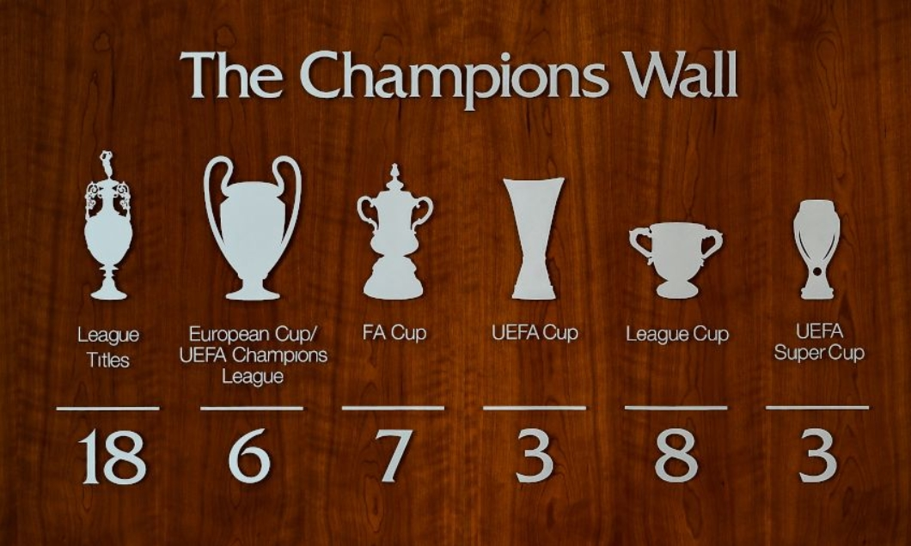
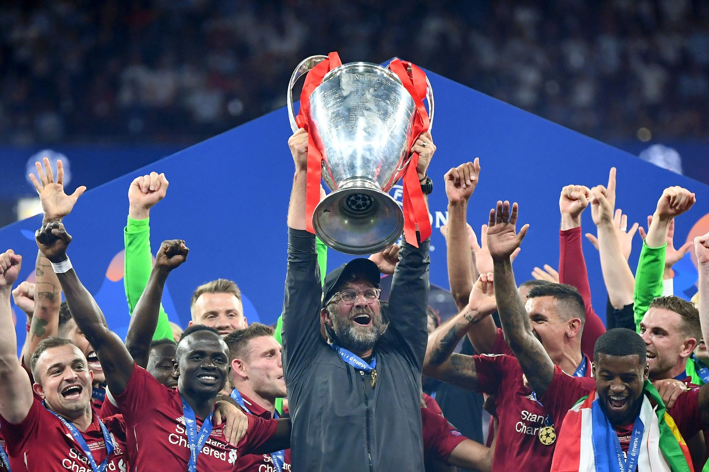
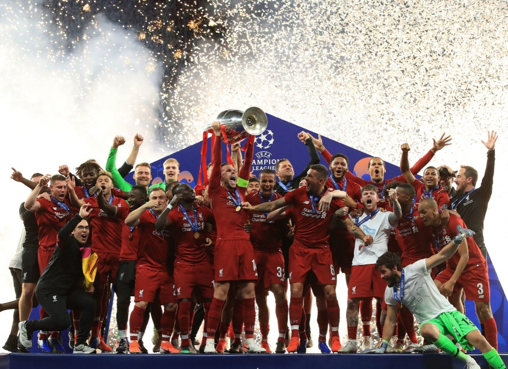
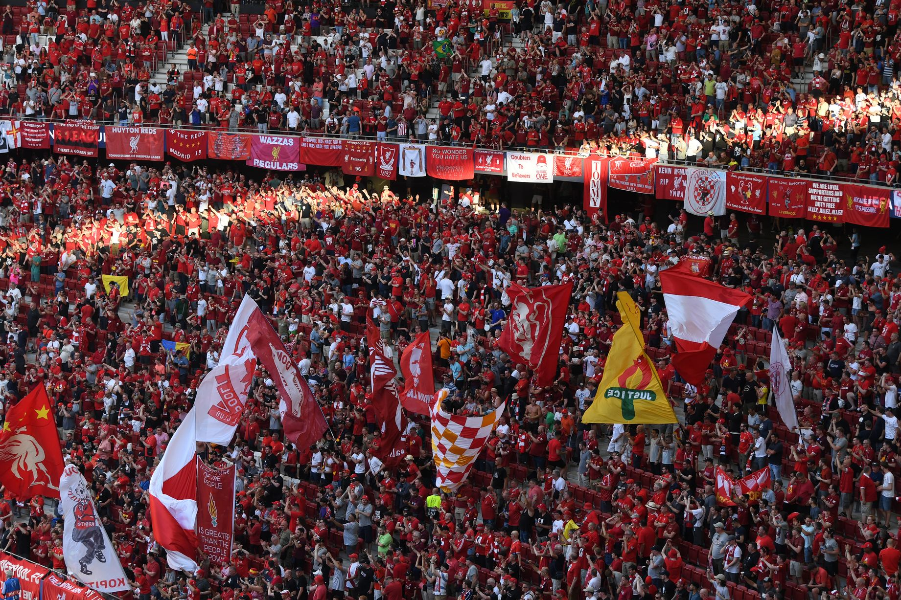

Liverpool.F.C .com
리버풀 축구 클럽은,
잉글랜드 머지사이드주 리버풀을 연고로 하는 프리미어리그 축구 클럽이다.
1892년 3월 15일 리버풀 축구 클럽이 탄생하게 되었다.
구단의 최초의 이름은 에버턴 애슬레틱이었다.
하지만 잉글랜드 축구 협회가 이미 존재하던 에버턴 팀과 이름이 헷갈릴 수 있다고하여 "리버풀 축구 클럽(Liverpool F.C.)"이 되었다.
잉글랜드 축구에서 가장 성공적인 팀 중 하나인 리버풀은 영국 문화에서 축구를 묘사할 때 종종 특징적으로 삼기도 했었고 미디어에 처음으로 나오기도 했었다.
현재 감독은 위르겐 클로프이며 주장은 조던 헨더슨이고 부주장은 제임스 밀너다.

리버풀은 현재 총 18회의 리그 우승을 한 바 있으며, 8번의 리그 컵 우승, 7번의 FA컵우승, 그리고 6번의 UEFA 챔피언스리그 우승을 차지한 바 있는데 챔피언스리그 우승은 잉글랜드 내에서는 역대 최다 우승 기록으로 기록되어 있다.

2018-19 시즌에는 리그 2위로 마감했지만, 챔피언스리그에서는 14년 만에 우승을 차지하였다.
리버풀은 챔피언스리그에서 5번 우승하여 잉글랜드 클럽 중 최다 기록을 갖고 있는데, 유럽 전역을 통틀어서 단 2개의 클럽만이 리버풀보다 더 많은 우승횟수를 가지고 있다.
리버풀은 2005년에 5번째 챔피언스 리그 우승을 이뤄내며 UEFA 명예의 뱃지 착용 자격을 얻음과 동시에 챔피언스 리그 우승컵을 영구 소장할 수 있게 되었다.
이는 잉글랜드에서는 최초이자 유일한 일이며 유럽의 수많은 축구 클럽 중 리버풀을 제외하고 영예의 배지를 착용할 수 있는 팀은 다섯 팀뿐이다.


리버풀은 많은 팬들을 보유하고 있으며, 모든 홈 경기들은 거의 매진이 되기도 한다.
콥(Kop)은 리버풀 FC의 서포터즈를 통칭해 부르는 단어이다. 리버풀의 홈구장 안필드를 가득 메운 콥들의 열정적인 응원은 리버풀에겐 큰 힘을, 상대편에겐 상당한 부담감을 주는 것으로 유명하다.
클럽에 대한 자부심과 충성심이 유별난 것으로 유명한데 비록 리버풀에게 힘든 시련이 없지 않았지만 과거 오랫동안 유럽 최강팀으로 군림했던 영광스런 역사가 있기에 그 시절이 다시 재현될 수 있다는 믿음을 항상 가지고 있다.
You'll Never Walk Alone은 리버풀 FC를 상징하는 노래이자 표어로 알려져 있으며, 리버풀의 경기 시작시 서포터들에 의해서 불려지는 노래이다.
'어떤 어려울 때라도 당신은 혼자가 아니다'라는 스포츠 정신에 적절한 가사 덕에 리버풀 FC의 팬들이 경기 때마다 부르기 시작했고 그로 인해 리버풀의 대표 응원가가 되었다.